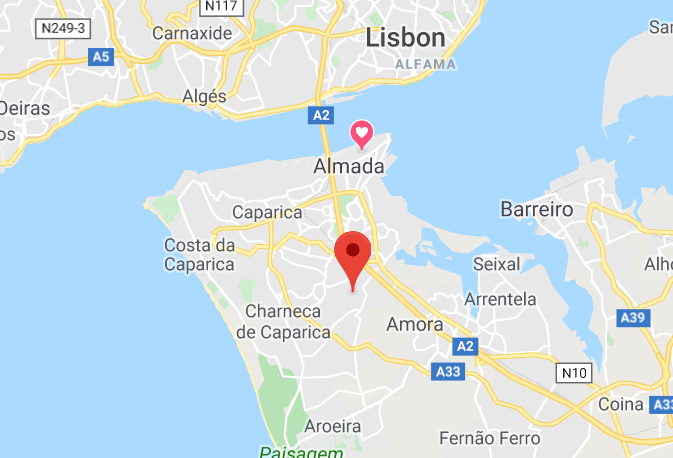
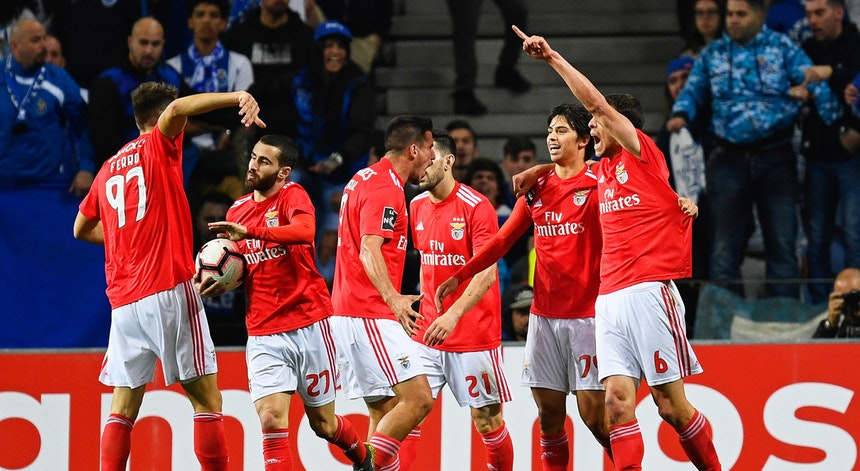
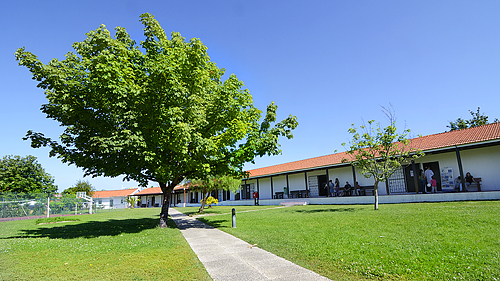

Quem sou eu?
O meu nome é Miguel Velez, tenho 19 anos e sou de Vale de Milhaços (Seixal). Sou um aluno de 1º ano do CTeSP de TPSI na Escola Superior de Tecnologia de Setúbal.
O meu objetivo, no futuro, é fazer um programa, website ou aplicação que realmente seja muito útil para os seus utilizadores, e que estes gostem de usar.
Hobbies
Nos meus tempos livres gosto de ...
Nos meus tempos livres gosto de ver filmes ou séries de televisão, gosto de jogar e ainda de assistir a jogos de futebol, de preferência do Benfica. Sempre que posso gosto de ir ao estádio ver um jogo ao vivo, ou ao cinema ver um filme em vez de o fazer em casa.
Anteriormente jogava ténis, mas devido a uma lesão no joelho não consegui voltar a um nível competitivo como antes e isso fez-me perder o gosto e a motivação de jogar ténis.
Formação
Comecei o 1º ciclo do ensino básico na ...
Comecei o 1º ciclo do ensino básico na Escola Básica Nº1 do Feijó, no 2º ciclo frequentei a Escola básica da Alembrança também no Feijó. O 3º ciclo foi repartido entre a Escola da Alembrança e a Escola Secundária Romeu Correia. No final do 3º ciclo decidi seguir o curso de ciências e tecnologia, na mesma escola, mas não gostei porque eu queria aprender a programar e o curso não me ensinava nada do que prentendia e ainda tinha uma dificuldade elevada para coisas que não me interessavam.
Decidi então mudar para um Curso Profissional de Gestão e Programação de Sistemas Informáticos na Escola Profissional de Educação para o Desenvolvimento . No final deste curso a escola propocionou um estágio numa empresa de programação, a Cleverti. Na Cleverti aprendi muito graças a todos os funcionários da empresa que sempre me ajudaram durante estes tempos, fazendo deste estágio uma experiência que não irei esquecer. Considero estes 4 meses, o tempo em que mais me desenvolvi como programador e como pessoa num contexto de trabalho.
